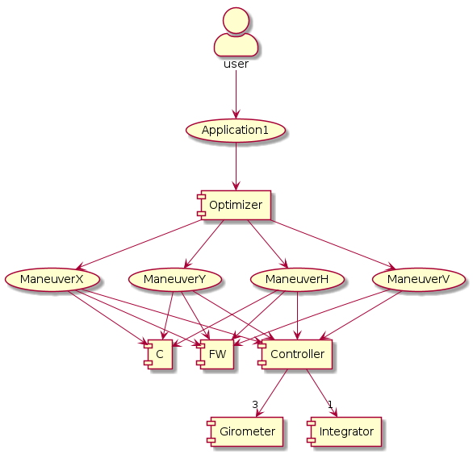
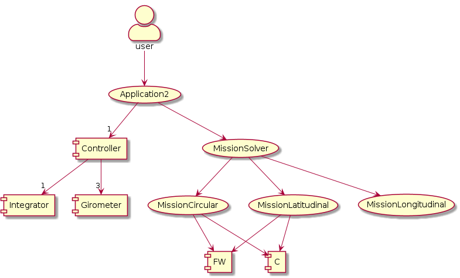

- Generated by
 1.9.1
1.9.1
|
Multi-functional Missions Queue Project
|
This site aims at describing how the problem of multi-functional missions queue is implemented. Within this purpose, UML diagrams are used to describe the main components and functionalities of the source-code, and Doxygen is used to generate the documentation of the signatures of the main functions used in the source code. In order to produce the UML diagrams, the program plantuml was used.
The problem of the multi-functional missions queue must be solved by autonomous aerial vehicles, where latitudinal, longitudinal and circular missions must be accomplished by them. With the objective of solving the problem of the multi-functional missions queue, firstly was necessary to design and tune the controller of the aerial vehicles. Following this line of reasoning, as shown in Figure 1, Application 1 was built to tone the automatic controller, and a paper was published about it, i.e., "A Probabilistic Approach for Designing Non-linear Optimal Robust Tracking Controllers of Unmanned Aerial Vehicles" (Applied Soft Computing) of Giacomin and Hemerly (2015).

Once the controller was built, it was necessary to build Application2, as shown in Figure 2, where the commands of references produced in this application were submitted to the controller designed in Application1. In Figure 2 the components FW and C represents the most basic maneuvers "to go forward" and "to turn", as described in the papers.

With the objective of reusing as source-code as possible, all components that are used in both Application1 and Application2, or that are intended to be reused in other future applications, are represented in Figures 1 and 2 as components, while the source-code that is not still intended to be reused is represented as use-cases of these applications.
The documentation of the header files covers the most important functions and structures of Application2, i.e., the implementation of Missions, trajectories and formation re-configurations. Secondary structures or files are not documented in details, though they may appear in Figures 1 and 2.
Author: Paulo André Sperandio Giacomin.
Description: He received the Doctor of Science degree, which is the equivalent PhD degree in Brazil, from Technological Institute of Aeronautics, in the area of informatics. The most common subjects in this publications are algorithms and control, distributed autonomous systems and optimization. He is permanent professor at Santa Cruz State University, in Ilhéus-BA, Brazil. If you want to give suggestions about this site, please send an e-mail to pasgiacoin at uesc.br or paulo.as.giacomin at gmail.com.
ORCID: https://orcid.org/0000-0002-1710-5250 (in English)
LATTES: http://lattes.cnpq.br/3341598920388063 (in Portuguese).
Advisor: Elder Moreira Hemerly.
Description: He received the PhD degree from the Imperial College of London, in the area of electric engineering, in the sub-area of automatic control.
LATTES: http://lattes.cnpq.br/1785344627828434 (in Portuguese).
Date: 11 June 2022. Endereço antigo: http://paulo-giacomin.epizy.com/mmq